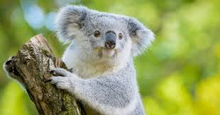

호주 동부에 서식하는 오스트레일리아 유대상목 쌍절치목 코알라과에 속하는 동물이다.
생김새가 곰처럼 생겼기 때문에(일단 학명인 Phascolarctos에 무슨 글자가 들어가는지 보자.)
[1] 네이티브 베어(Native Bear)라고 부르기도 하며 주머니곰, 나무타기주머니곰 등으로도 불린다지만 생활사
등 여러 면에서는 오히려 나무늘보와 가깝다고 볼 수 있다.[2] 한마디로 유대류 버전 나무늘보인 셈. 게다가 얼굴을
어떻게 보면 곰보다는 청설모와도 비슷해 보인다. 그리고 애초에 호주의 유대류 중에는 곰에 상응하는 종이 없다.
유대류의 다양성을 생각해 보면 이상한 일.[3]
코알라는 귀엽다~!!!